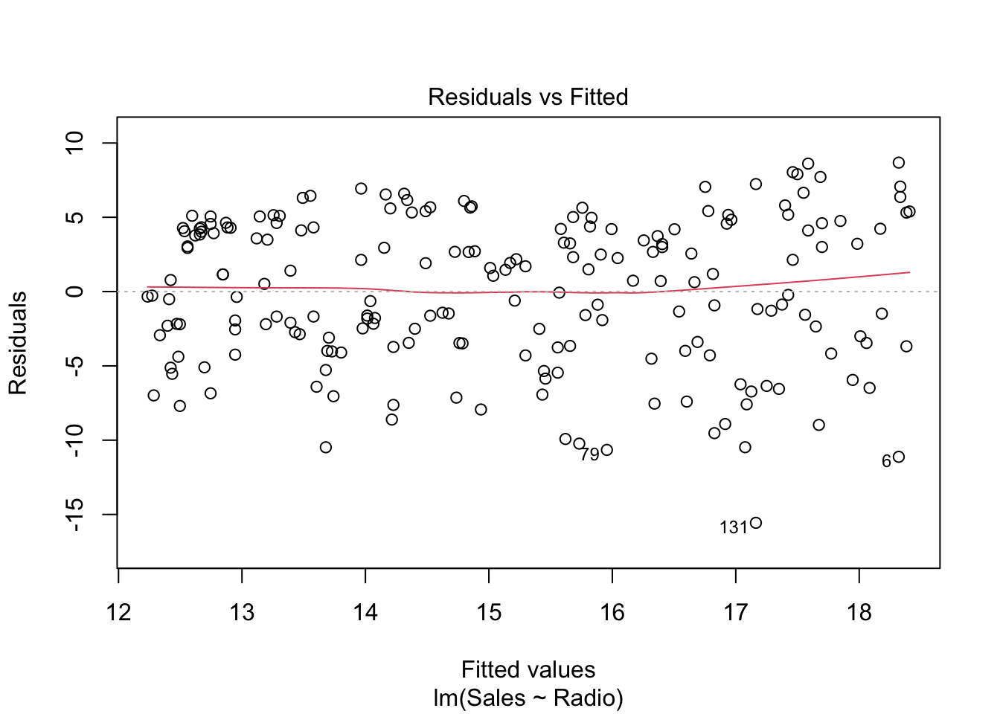
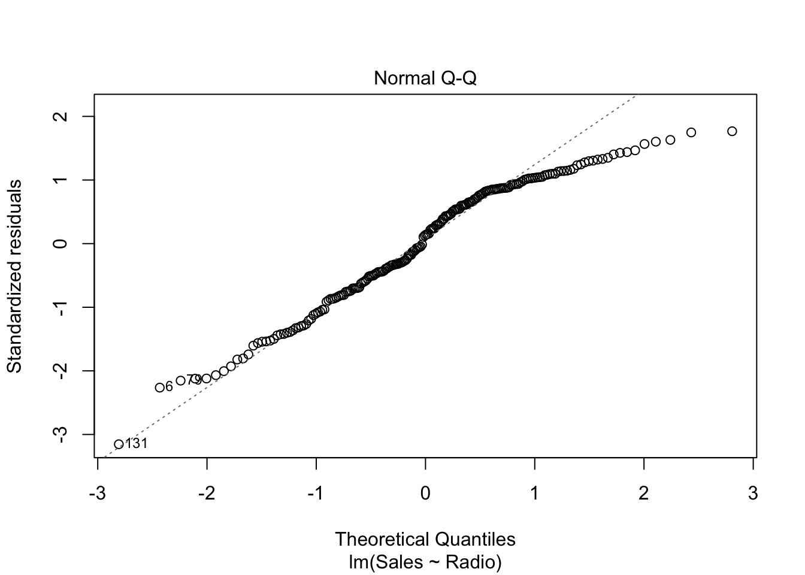
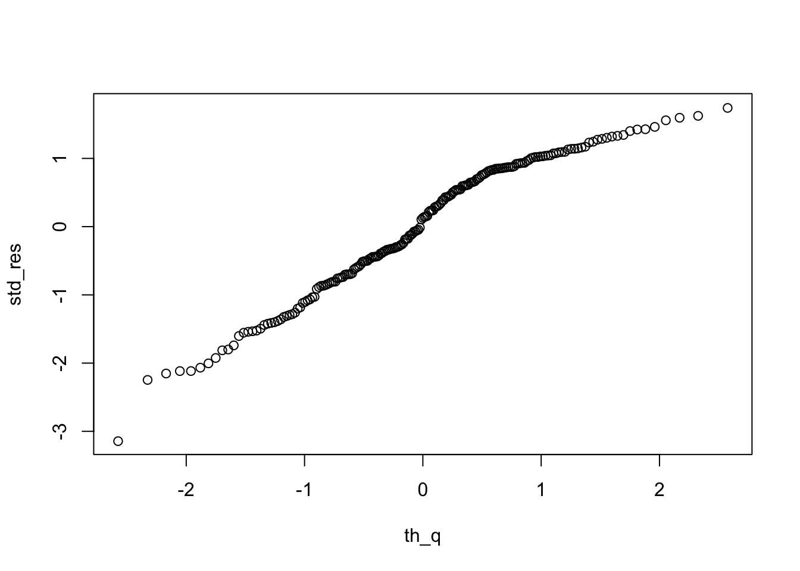
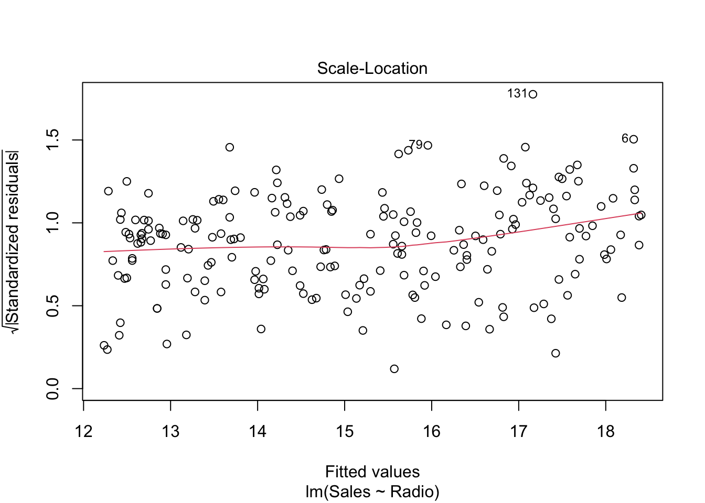
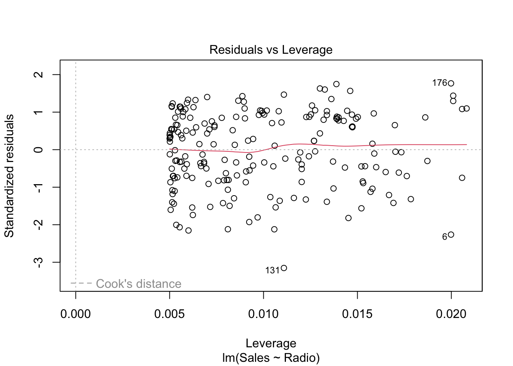
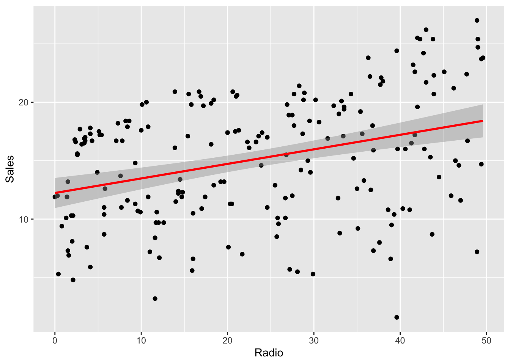
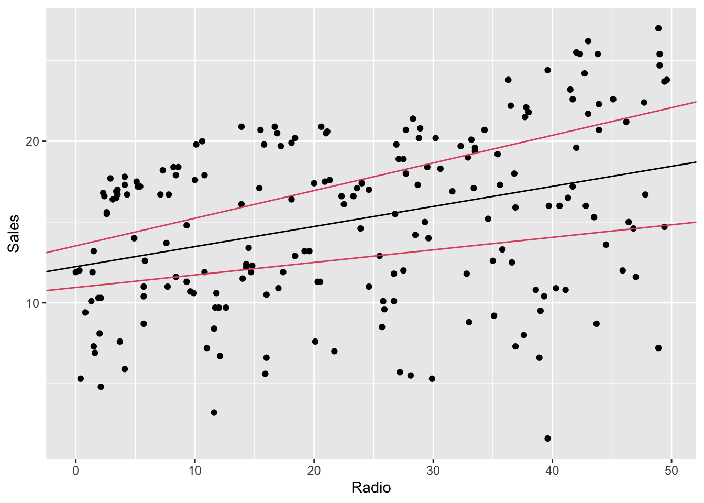

Chapter 5 Tools for linear regression analysis
We will still use the advertising dataset. Let’s load it.
library(readr)
advertising <- read_csv("./datasets/advertising.csv")## Rows: 200 Columns: 4
## ── Column specification ────────────────────────────────────────────────────────
## Delimiter: ","
## dbl (4): TV, Radio, Newspaper, Sales
##
## ℹ Use `spec()` to retrieve the full column specification for this data.
## ℹ Specify the column types or set `show_col_types = FALSE` to quiet this message.5.1 Plot
The plot function plot() provides special plots for a linear
model object. See details ?plot.lm.
radio_lm <- lm(Sales ~ Radio, data = advertising)
# residuals vs fitted
plot(radio_lm, which = 1)
This shows how the residuals \(e\) are distributed against the fitted values (or predictions) \(\hat{y}\). Ideally, there should be no correlation, i.e. randomly spread around 0. If that is not the case and the plot shows a trend, the assumption of a linear regression model might not be appropriate.
# normal q-q plot
plot(radio_lm, which = 2)
The Q-Q plot compares two distributions (or one theoretical distribution with an empirical one). Given some data, the question it helps answering to is: is one distribution close to the other one? In particular, the above plot is a Normal Q-Q plot of \(e\), where its (standardized) distribution is compared to the standard normal distribution. More precisely, once the residuals are standardized (i.e. minus the mean, divided by the standard deviation) and sorted in ascending order, they are plotted against the theoretical quantiles of the standard Normal distributions. Example: the theoretical quantile of the \(k^{\text{th}}\) residual (in ascending order) is \(q_{\alpha}\) where \(\alpha = P(Z <= q_{\alpha}) = k / n\)
Exercise: draw a Q-Q plot “by hand”:
n <- nrow(advertising)
std_res <- with(radio_lm, {
sort((residuals - mean(residuals)) / sd(residuals),
decreasing = FALSE
)
})
th_q <- qnorm(1:n / n)
plot(th_q, std_res)
# scale-location
plot(radio_lm, which = 3)
This plot only reduces the skewness of the standardized residuals by taking its square root.
# residuals vs leverage
plot(radio_lm, which = 5) In order to understand this plot we have to introduced the so-called hat matrix
\[ H = X (X'X)^{-1} X' \]
which is the projection matrix that maps \(Y\) to \(\hat Y\). Its diagonal elements are particularly interesting and are called leverages of the observations. Note that \(h_{ii} \in [0,1]\) and \(\sum_i h_{ii} = p\), where \(p\) is the number of coefficients in the regression model. The leverage of an observation \(h_{ii}\) measures how much an observation \(y_i\) has an impact on the fitted value \(\hat y_i\).3
5.2 Multiple predictors
Predictors in R linear models are defined in the formula.
What is a formula?
In R, y ~ x + b is a formula.
yis the dependent variable(s) (e.g. response, label)x + bare the independent variables (e.g. predictors/features)- can also be one-sided e.g.
~ x +(plus) sign is not a sum, but a join operator- when formulae are written, variables are not evaluated (symbolic model)
- you can exclude some terms explicitly by using
-(e.g.y ~ x - 1will only estimate thexcoefficient and not the intercept, which is implicitly added bylm)
More on formulae later (see Interactions in the next lesson).
Examples:
f <- y ~ x + b
class(f)## [1] "formula"f[[1]] # formula symbol## `~`f[[2]] # dep vars## yf[[3]] # indep vars## x + bGenerally, a linear model formula is composed by multiple predictors.
complete_lm <- lm(Sales ~ TV + Radio + Newspaper, data = advertising)
# or
complete_lm <- lm(Sales ~ ., data = advertising)The dot stands for all the possible predictors in the dataset.
summary(complete_lm)##
## Call:
## lm(formula = Sales ~ ., data = advertising)
##
## Residuals:
## Min 1Q Median 3Q Max
## -7.3034 -0.8244 -0.0008 0.8976 3.7473
##
## Coefficients:
## Estimate Std. Error t value Pr(>|t|)
## (Intercept) 4.6251241 0.3075012 15.041 <2e-16 ***
## TV 0.0544458 0.0013752 39.592 <2e-16 ***
## Radio 0.1070012 0.0084896 12.604 <2e-16 ***
## Newspaper 0.0003357 0.0057881 0.058 0.954
## ---
## Signif. codes: 0 '***' 0.001 '**' 0.01 '*' 0.05 '.' 0.1 ' ' 1
##
## Residual standard error: 1.662 on 196 degrees of freedom
## Multiple R-squared: 0.9026, Adjusted R-squared: 0.9011
## F-statistic: 605.4 on 3 and 196 DF, p-value: < 2.2e-165.3 Confidence regions
The hypothesis system setup (in the general case, multiple regression) is:
\[ \begin{aligned} H_0: &\quad C \beta = \theta\\ H_1: &\quad C \beta \neq \theta \end{aligned} \]
The confidence region for \(\beta\) is given by the theorem by which:
\[ \frac{(C\beta - C\hat\beta)' (C(X'X)^{-1}C')^{-1}(C\beta - C\hat\beta)} {q \text{MSR}} \sim F(q, n-p) \]
where \(\text{rank}(C) = q \leq p\).
In case of \(C = I\), the \((1 - \alpha)\)-confidence region is an ellipsoid in \(\mathbb{R}^p\).
\[ (\hat\beta - \beta) X' X (\hat\beta - \beta) \leq F_{\alpha}(p, n-p) p \text{MSR} \]
As already seen before, some plotting functions also draw a confidence region for the regression line.
library(ggplot2)
ggplot(radio_lm, mapping = aes(Radio, Sales)) +
geom_point() +
geom_smooth(method = "lm", color = "red")## `geom_smooth()` using formula = 'y ~ x'
This confidence region is drawn according to that formula.
To get the confidence intervals values, just use confint()
confint(radio_lm)## 2.5 % 97.5 %
## (Intercept) 10.94703557 13.5244084
## Radio 0.07770266 0.1711606lb <- confint(radio_lm)[, 1]
ub <- confint(radio_lm)[, 2]To plot it, e.g. using ggplot:
# prevision region
ggplot(radio_lm) +
geom_point(mapping = aes(Radio, Sales)) +
geom_abline(
intercept = radio_lm$coefficients[[1]],
slope = radio_lm$coefficients[[2]], color = 1
) +
geom_abline(intercept = lb[1], slope = lb[2], color = 2) +
geom_abline(intercept = ub[1], slope = ub[2], color = 2)
The region between the lines is different (larger) from the one generated by
geom_smooth. Without entering too much in detail, this happens because the
confidence intervals in the second case are computed independently one
coefficients from the other, while in ggplot’s function the confidence region
is jointly computed, therefore it’s more accurate.
Explanation taken from https://it.mathworks.com/help/stats/hat-matrix-and-leverage.html↩︎